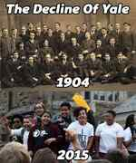

Rod Berne is a student, writer, and thought criminal. His columns run every Saturday. Follow him on Twitter.


I am a student at Yale University. I have closely observed the events of the last three weeks unfold and would like to offer a firsthand view of what has transpired.
Two events in particular have ignited the recent firestorm:
Three days before Halloween, the Dean of Student Engagement emailed students with a request to be extra-sensitive about their selection of Halloween costumes. Erika Christakis, lecturer and Associate Master, followed up with her own email telling students to talk with each other if we find something offensive, questioning the culture of universities treating students as children rather than adults. For many students, the email puts her in the same category as David Duke and Calvin Candie.
The second incident: On Halloween, a black student visiting from Columbia University claimed she was denied entrance to a party hosted at the Sigma Alpha Epsilon house. Allegedly, a member at the door told her, “white girls only.”
There is no proof whatsoever that the fraternity incident occurred. I’ve been to parties at every frat, including SAE, and they don’t give a fuck what race a girl is as long as she’s hot. Fraternities are now being pressured by both the administration and black female students to give public statements affirming their commitment to inclusion, and condemning racism and sexism.
However, it does not matter if the SAE incident occurred or not. What matters is the narrative. Fraternities are routinely accused of racism and sexism, and the accuser knew no one would dare question her accusation. These people have learned that if they shout “racism” no one will call them on their infantile behavior.
Students are now claiming that the recent protests are about more than the Christakis email or SAE—rather, it is about the “systemic racism” that exists at Yale. The students knew that no one would take them seriously if those two events were all they had, so they co-opted them into a larger narrative of racism—a primitive technique that garnered nationwide attention.
On Thursday, November 12th, shortly after midnight, 200 students calling themselves “Next Yale” marched to the home of Yale President Peter Salovey. They presented him a list of demands, including:
That last demand is interesting. Recently, Ms. Christakis fled New Haven as a result of receiving death threats. One wonders whether she would be willing to continue in her position even without the calls for her removal. In addition to threats of violence, Ms. Christakis’s previously scheduled courses for next semester have been cancelled. This is what inclusion looks like at Yale.
In response to the demands of “Next Yale,” President Salovey announced that the university will take the following measures:
For now, Erika Christakis and her husband will remain in their positions. The student response to this decision may prove to be spectacular.
People have been discussing topics of free speech, race, and coddling, but I have not seen discussions of what I consider to be even more important: status.
We are the Selfie Generation, which means that we don’t exist unless other people are looking at us (pics or it didn’t happen). There is no internal sense of self that exists among millennials. Furthermore, we are quietly envious of people who hold traditional positions of status (e.g., fraternity members, professors, officials) and have learned that by shouting loud enough we will receive their attention. Screaming leads to instant status.
This is precisely what happened with the girl who shrieked at Nicholas Christakis in the Silliman courtyard, Jerelyn Luther. She is a very bright girl who likely would have gone on to be very successful. Still, she knew that screaming like a child at a world-renowned professor would gain the approval of her peers.
I guarantee Jerelyn is being showered by praise and treated like a goddess by students who are unfortunate enough to cross her path. I guarantee that if no one else had been present except her and Professor Christakis, her behavior would not have been as vile. We don’t exist unless other people see us.
The liberal white students want so badly to be accepted by students of color, and especially crave the approval of women of color. The bitterness of female students of color stems from their anger at the higher positions white male students tend to hold through no fault of their own. “Why can’t I have as much social status and wealth as that guy? Fuck it, I’ll blame it on racism, scream a lot, and people will sooth my ego and tell me how strong and beautiful I am.”

Why would anyone want the approval of these monsters? Even if they do approve, the will rescind it at the drop of a hat if it benefits them or if it means they’ll receive social points from their peers.
These events have allowed people’s true motivations and opinions to be revealed. What some students are realizing is that their very existence is perceived as a threat. The encroaching ideology holds that by existing in the world as a white person, white people are unaware of the privileged status they hold. Anything short of continually reminding themselves that they are white, they are oppressors, and any interactions they have with a people of color have power struggle implications, is pure racism.
People are no longer individuals; we are representatives of our respective pasts. A white male speaking with a black female is not merely one human being interacting with another—no, it is one representative of the oppressor class speaking with another representative from the oppressed class.
White students, and to a lesser extent Asian students, are targets. I’ve listened to white students describe their feelings of shock and betrayal at having been accused of racism for the sin of existing. While they will readily agree that racism is a problem, many look utterly bewildered when you tell them that they are supporting “systemic racism” because they don’t take the time to incorporate the experiences of every minority group into their perspective at all times. The protesters have overplayed their hand.
It’s not all about race, ethnicity, or gender, however—ideology trumps all. Generally, white students who parrot the right opinions have been able to move through Yale with fewer accusations of racism than students of color who remain neutral or question the “Next Yale” movement. An undercurrent of resentment is forming among the dissenters of all backgrounds.
Keep in mind that the people at Yale are as liberal as they come. This grand university may soon no longer be worth saving. At this point many students are focusing on getting their degrees and getting the fuck out of here.
Time will tell.
Read More: Yale Students Throw Temper Tantrum Over “Offensive” Email
{kind=link}
{kind=link}
{kind=link}